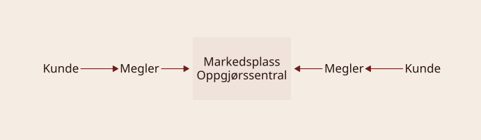
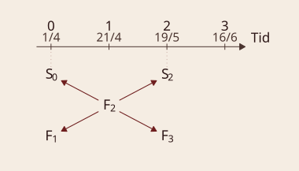
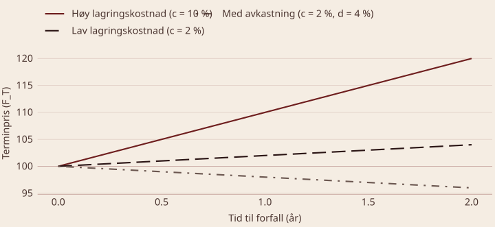
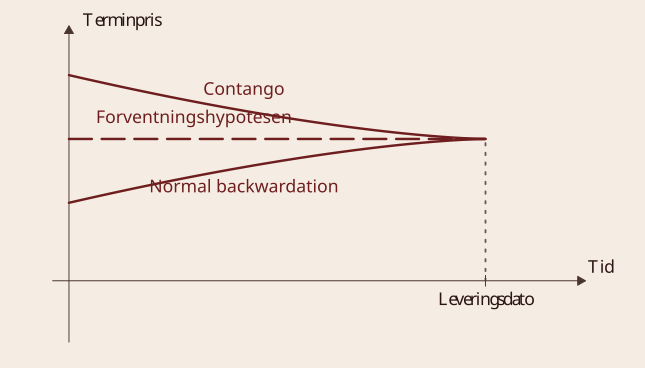
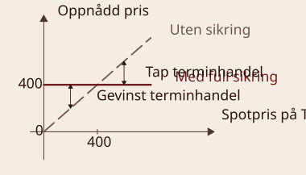
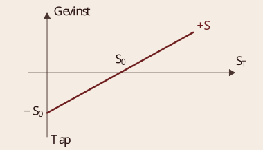
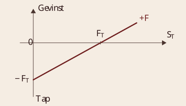
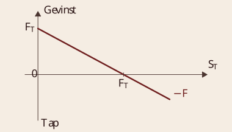
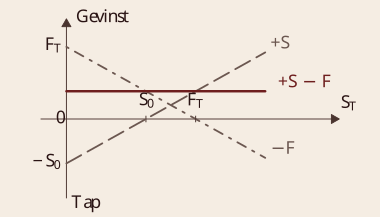
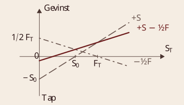

Terminkontrakter
BED3 — Investering og finans · Forelesning 15
Norges Handelshøyskole
Problemstillinger
- Hva terminhandel er
- Definisjon
- Aktiviteter på terminmarkedene og motiver for terminhandel
- Litt om institusjonelle forhold for børsomsatte kontrakter
- Sørge for høy likviditet
- Sørge for å håndtere kredittrisikoen
- Prising av terminkontrakter
- Lagringskostnadshypotesen
- Forventningshypotesen
- Betydningen av volumbalansen mellom kommersielle aktører
- Sikring med bruk av terminkontrakter
- Innta posisjoner som reduserer risikoen
- Full og halv sikring
Oversikt over terminhandel
En forpliktelse til fremtidig kjøp eller salg
Terminhandel
Definisjon — terminkontrakt Kjøper (selger) skal motta (levere) et bestemt volum av et bestemt underliggende aktivum på et senere tidspunkt, til en pris som fastsettes på avtaletidspunktet. Det underliggende aktivumet kan være et verdipapir eller en fysisk vare.
Forwardkontrakter
- Individuell handel og personlig kontakt
- Skreddersydde kontrakter
Futureskontrakter
- Organisert handel over børs
- Standardiserte kontrakter
- Oppgjørssentral (clearingsentral)
Forward- vs. futureskontrakter
Likheter: begge er terminbaserte derivater — en avtale om kjøp eller salg av et underliggende aktivum på en fremtidig dato til en forhåndsavtalt pris. Begge brukes til risikostyring (sikring) og spekulasjon, og verdien avhenger av prisendringer i det underliggende aktivumet.
Forwardkontrakter
- Ikke-standardiserte: skreddersys etter partenes behov
- Handles OTC — ingen børs og ingen clearingsentral
- Høyere kredittrisiko: ingen daglig avregning eller marginbetaling
- Ofte fysisk oppgjør ved forfall, men kontantoppgjør forekommer
Futureskontrakter
- Standardiserte: børsen fastsetter størrelse, forfall og leveringssted
- Handles på børs, for eksempel CME, Nasdaq OMX og Nord Pool
- Clearingsentralen er motpart for alle handler og senker kredittrisikoen
- Daglig oppgjør (marked-to-market) mot markedspris
- Vanligvis kontantoppgjør — fysisk levering skjer sjelden
Aktiviteter og motiver
- Risikostyring og sikring (hedging)
- Salgssikring — selge på termin (produsenter)
- Kjøpssikring — kjøpe på termin (konsumenter)
- Spekulasjon (trading)
- Ta risiko ut fra egne oppfatninger og egen informasjon (investeringsmarked)
- Arbitrasje
- Oppnå sikker meravkastning ved å utnytte relativ feilprising mellom ulike terminkontrakter, eller mellom terminkontrakt og underliggende aktivum
- Kostnadseffektivitet
- Redusere transaksjonskostnadene sammenlignet med å kjøpe det underliggende aktivumet
- Utvidet mulighetsområde
- «Omgå» regelverk og restriksjoner — én av partene har en kort posisjon
- Informasjonsinnhenting
- Terminprisene sier noe om hva markedet venter seg
Terminkontrakter vs. opsjoner
Likheter
- Begge er derivater — verdien avhenger av et underliggende aktivum
- Begge brukes til risikostyring, spekulasjon og arbitrasje
- Begge gjelder fremtidige transaksjoner til en forhåndsbestemt pris
Forskjeller
- Terminkontrakter er en forpliktelse for både kjøper og selger til å handle ved forfall
- Opsjoner gir en rett, men ikke en plikt — det gir asymmetri i risikoen
- Opsjoner krever en premie fra kjøperen; terminkontrakter gjør det ikke
- Prisingen av opsjoner er mer kompleks (Black-Scholes)
- Terminkontrakter gjøres opp fysisk eller kontant, mens opsjoner utløper enten in the money eller verdiløse
Markedsorganisering av futureshandel

Forhold som øker likviditeten
- Organisert markedsplass, for eksempel CME, Nasdaq OMX og Nord Pool
- Standardiserte kontrakter: størrelse, kvalitet, forfall og leveringssted
- Lavere transaksjonskostnader enn i OTC-markedet
Forhold som reduserer kredittrisikoen
- Oppgjørssentral (clearingsentral) som juridisk motpart
- Marginbetalinger — et depositum, ikke en avgift (initial- og variasjonsmargin)
- Daglig omprising og oppgjør (marked-to-market)
- Pris- og posisjonsgrenser som begrenser systemrisikoen
Faktorer som øker likviditeten i futureshandel
- Organiserte markeder
- Effektiviserer kjøp og salg ved å samle aktørene på ett sted
- Gjør det enklere å finne motparter, og senker søkekostnadene
- Standardiserte kontrakter
- Alle futureskontrakter har fastsatt størrelse, kvalitet, forfall og leveringssted
- Øker sammenlignbarheten mellom kontrakter og reduserer prisforskjellene
- Lavere transaksjonskostnader
- Sentralisert handel gir lavere spread mellom kjøps- og salgspris
- Effektive clearingmekanismer reduserer motpartsrisikoen
Hvordan reduseres kredittrisiko i futureshandel?
- Oppgjørssentral (clearingsentral)
- Clearingsentralen blir motpart både til kjøperen og til selgeren
- Reduserer risikoen for mislighold, siden sentralen garanterer for oppgjøret
- Marginbetalinger
- Initialmargin: depositum som dekker motpartens risiko
- Variasjonsmargin: daglige betalinger etter markedsbevegelsene
- Marked-to-market-prinsippet
- Posisjonene justeres daglig mot gjeldende markedspriser
- Hindrer opphopning av risiko ved store prisbevegelser
- Pris- og posisjonsgrenser
- Reguleringer motvirker ekstreme prissvingninger
- Kan forhindre spekulative bobler og finansielle kollapser
Eksempel: marked-to-market med olje
Kjøpe olje-futures Kontrakten gjelder 1 000 fat olje til en futurespris på 80 USD per fat. Investoren betaler en initialmargin på for eksempel 5 000 USD — typisk 3–12 % av kontraktsstørrelsen — og posisjonen omprises daglig mot markedsprisen.
| Dag | Pris (USD/fat) | Gevinst/tap (USD) |
|---|---|---|
| 1 | 80,00 | 0 |
| 2 | 81,50 | +1 500 |
| 3 | 79,00 | −2 500 |
| 4 | 78,25 | −750 |
| 5 | 80,75 | +2 500 |
Hvordan påvirkes kontoen til investoren?
- Dag 2: prisen stiger 1,50 USD per fat, og investoren får en gevinst på 1 500 USD.
- Dag 3: prisen faller 2,50 USD per fat, og investoren taper 2 500 USD.
- Faller marginen under et kritisk nivå, kommer en margin call: mer kapital må settes inn for å opprettholde posisjonen.
- Tilføres ikke mer kapital, blir posisjonen automatisk likvidert av clearingsentralen.
Quiz: markedsorganisering av futureshandel
Q1: Hva er hovedforskjellen mellom en forwardkontrakt og en futureskontrakt? En forwardkontrakt handles OTC og er skreddersydd, mens en futureskontrakt handles på børs og er standardisert.
Q2: Hva er funksjonen til en clearingsentral i futuresmarkedet? Clearingsentralen er mellommann i alle handler, reduserer kredittrisikoen og sørger for daglig oppgjør gjennom marked-to-market.
Q3: Hva er en margin call i futureshandel, og når skjer den? En margin call skjer når variasjonsmarginen faller under et minimumsnivå, og investoren må tilføre mer kapital for å opprettholde posisjonen.
Prising av terminkontrakter
Prisdannelse og teorier
Introduksjon til prising av terminkontrakter
Terminprisen F_T bestemmes av økonomiske faktorer knyttet til det underliggende aktivumet.
Viktige faktorer
- Spotprisen S_0 — dagens markedspris for aktivumet
- Tidsverdi T — tid til kontrakten utløper
- Lagringskostnader c — kostnaden ved å holde aktivumet fram til levering
- Risikofri rente r_f — alternativkostnaden ved et risikofritt aktivum
- Forventet fremtidig spotpris E(S_T) — markedets antakelse om prisutviklingen
To sentrale prisingsmodeller
- Lagringskostnadshypotesen: prisen avledes fra kostnaden ved å eie aktivumet
- Forventningshypotesen: terminprisen reflekterer forventet fremtidig spotpris
Sammenhengen mellom termin- og spotpriser
Terminprisen for forfall på tidspunkt T, altså F_T, har en naturlig tilknytning til
- dagens spotpris S_0
- fremtidig spotpris S_T
- prisen på tilsvarende terminkontrakter med andre forfallstidspunkter, F_t

Lagringskostnadshypotesen
Definisjon — terminprisen Terminprisen er lik spotprisen pluss en kompensasjon for kostnaden ved å holde aktivumet fram til levering.
F_T = S_0 \, (1 + c \cdot T)
- F_T = terminpris for forfall
- S_0 = spotpris, dagens markedspris
- c = lagringskostnad i vid forstand, målt som prosent av aktivaverdien
- T = tid til forfall, målt i år
Hvorfor lagringskostnader?
- Fysiske varer: lagring, forsikring, forringelse og transport
- Finansielle aktiva: alternativkostnaden er den risikofrie renten
- Gir aktivumet en løpende avkastning d, må denne trekkes fra: F_T = S_0 \bigl(1 + (c - d) \cdot T\bigr)
Utledning av lagringskostnadshypotesen (1/2)
To alternative investeringsstrategier
- Investere P_0 i en portefølje som er identisk med en aksjeindeks, og holde den i et halvt år.
- Investere P_0 i risikofrie statssertifikater med løpetid på et halvt år, og samtidig inngå en futureskontrakt om kjøp av indeksen om et halvt år, av samme størrelse som porteføljen i alternativ 1.
Hva er sluttbeløpet for hver av strategiene?
Sluttbeløp ved alternativ 1
- Mottar utbytte over perioden — antatt kjent og utbetalt ved slutten — lik d
- Verdien på indeksen etter et halvt år er P_1
- Sluttsum: P_1 + P_0 \cdot d
Utledning av lagringskostnadshypotesen (2/2)
Sluttbeløp ved alternativ 2 — investering i sertifikater, pluss renter, pluss gevinst eller tap på kontrakten:
\underbrace{P_0 \cdot (1 + q)}_{\text{investering inkl. renter}} + \underbrace{P_1 - F}_{\text{gevinst/tap på futureskontrakten}}
I begge tilfeller investeres det samme beløpet, P_0, og den eneste usikkerheten er knyttet til P_1. Like investeringsbeløp og lik usikkerhet betyr at begge alternativer bør ha samme sluttverdi:
\begin{aligned} & P_1 + P_0 \cdot d = P_0 \cdot (1 + q) + P_1 - F \\ & \Rightarrow F = P_0 \cdot (1 + q) - P_0 \cdot d \\ & F = P_0 \cdot \bigl[1 + (q - d)\bigr] \end{aligned}
Eksempler på lagringskostnader
- Råvarer — høye lagringskostnader
- Olje: spesiallagring i tanker, forsikring mot lekkasje og vedlikehold
- Hvete: risiko for råte og insekter, og lagringsavgifter i kornsiloer
- Naturgass: lagring i underjordiske reservoarer, høy infrastrukturkostnad
- Metaller — moderate lagringskostnader
- Gull: kan lagres trygt i hvelv, men forsikringen kan være kostbar
- Kobber: tar plass og kan oksidere, men forringes mindre enn hvete
- Finansielle aktiva — ingen fysisk lagring
- Aksjer: lagringskostnaden er alternativkostnaden, altså risikofri rente
- Obligasjoner: samme prinsipp, men med kupongutbetalinger i tillegg
Eksempel: prising av futures
Bruk av lagringskostnadshypotesen
- S_0 = 1\,000, r_f = 1{,}6\ \% p.a., d = 0
- S_0 = 1\,000, r_f = 1{,}6\ \% p.a., d = 4\ \% p.a.
\begin{aligned} &\text{1.}\quad F_3 = S_0 \cdot (1 + r_f \cdot T) = 1\,000 \cdot (1 + 0{,}016 \cdot 0{,}25) = 1\,004 \\ &\text{2.}\quad F_3 = 1\,000 \cdot \bigl[1 + (0{,}016 - 0{,}04) \cdot 0{,}25\bigr] = 994 \end{aligned}
- Gir aktivumet ingen avkastning, blir terminprisen høyere enn spotprisen.
- Gir aktivumet en avkastning som er høyere enn r_f, blir terminprisen lavere, fordi investorene går glipp av utbyttet når de ikke eier det underliggende.
Feilprising og arbitrasjemulighet (1/2)
Hva hvis futuresprisen er feil?
- Markedet priser F_3 = 1\,010, men den korrekte prisen er 1\,004.
- Det gir en arbitrasjemulighet.
Hvordan utnytter vi arbitrasjen? Selg det som er relativt dyrt, og kjøp det som er relativt billig. Strategien blir altså å selge den dyre kontrakten og kjøpe indeksen med lånefinansiering. En indekskontrakt har en størrelse på 100 kroner multiplisert med indeksverdien. Selger vi 200 kontrakter, må vi investere like mye i indeksen som verdien av kontraktene vi selger: 1\,000 \cdot 100 \cdot 200 = 20\,000\,000.
Hva skjer så med porteføljeverdien — solgt kontrakt pluss lang posisjon i indeksen — hvis prisen på indeksen stiger eller faller?
Feilprising og arbitrasjemulighet (2/2)
Hva hvis futuresprisen er feil? Markedet priser F_3 = 1\,010, men den korrekte prisen er 1\,004. Det gir en arbitrasjemulighet. Her er M = 100 \cdot 200, altså kontraktsstørrelse ganger antall kontrakter.
| Oppgang (S_3 = 1\,030) | Nedgang (S_3 = 970) | |
|---|---|---|
| Gevinst på futures | (1\,010 - 1\,030) \cdot M = -0{,}4 | (1\,010 - 970) \cdot M = 0{,}8 |
| Verdi av indeksportefølje | 20 \cdot \frac{1\,030}{1\,000} = 20{,}6 | 20 \cdot \frac{970}{1\,000} = 19{,}4 |
| Tilbakebetaling av lån | -20 \cdot \left(1 + 0{,}016 \cdot \frac{3}{12}\right) = -20{,}08 | -20{,}08 |
| Netto | 0{,}12 | 0{,}12 |
- Gevinst: (1\,010 - 1\,004) \cdot M = 120\,000 kroner
- Kontantstrøm i dag: -20 + 20 = 0
- Kontantstrøm om tre måneder: 120\,000 kroner
Tabellen og kontantstrømmen i dag er i millioner kroner; gevinsten er oppgitt i kroner.
Hvordan lagringskostnader påvirker prisen

Modell: F_T = S_0 \cdot (1 + (c - d) \cdot T), med S_0 = 100. Gjenskapt fra den frosne kildens TikZ-koordinater — figuren hadde ingen R-skript og ingen formel på selve plansjen.
- Lav lagringskostnad → terminprisen ligger nær spotprisen.
- Høy lagringskostnad → terminprisen øker med tiden til forfall.
- Gir aktivumet en løpende avkastning d, trekker det terminprisen ned.
Eksempel: prising av olje-futures
Oljefutures
- Spotpris på olje i dag: S_0 = 80 USD per fat
- Lagringskostnad: c = 5\ \% per år
- Tid til forfall: T = 1 år
Terminprisen med lagringskostnad blir
F_T = S_0 \cdot (1 + c \cdot T) = 80 \cdot (1 + 0{,}05 \cdot 1) = 84 \text{ USD}
- Øker c til 10 %, stiger terminprisen til 88 USD.
- Høye lagringskostnader kan gi contango, der futuresprisene ligger over spotprisene.
Quiz: lagringskostnadshypotesen
Q4: Hvordan påvirker lagringskostnader futuresprisen på en råvare? Jo høyere lagringskostnader, desto høyere futurespris, fordi kostnadene må dekkes av den som holder aktivumet fram til levering.
Q5: Hva er den grunnleggende formelen for futuresprising når lagringskostnader er inkludert? F_T = S_0 (1 + c \cdot T), der c er lagringskostnaden per tidsenhet.
Q6: Hvordan påvirker en løpende avkastning d på et aktivum futuresprisen? Den reduserer futuresprisen, siden den som eier aktivumet mottar avkastningen: F_T = S_0 (1 + (c - d) \cdot T).
Forventningshypotesen
Definisjon — forventningshypotesen Terminprisen er lik forventet fremtidig spotpris ved kontraktsforfall; hypotesen ser altså på sluttidspunktet. Formelt er F_T = E(S_T), der E er forventningsoperatoren.
To mulige konsekvenser
- Investorene får forventet avkastning lik risikofri rente.
- Investorene får en sikker risikopremie.
Begge alternativer er urimelige.
Holder derfor bare i spesialtilfeller
- Investorene er risikonøytrale
- Risikoen i det underliggende aktivumet er usystematisk
- Den underliggende varen kan ikke lagres
- Volumbalanse mellom sikringskvantum knyttet til salg og til kjøp
Introduksjon til forventningshypotesen
Hovedidé: terminprisen er den forventede spotprisen ved kontraktsforfall, F_T = E(S_T).
Forutsetninger
- Ingen risikopremie — aktørene er villige til å handle til forventet fremtidig pris
- Investorene er risikonøytrale og krever ingen kompensasjon for usikkerhet
- Perfekte markeder — ingen transaksjonskostnader og ingen arbitrasjemuligheter
Hvorfor er den viktig?
- Brukes ofte i valutamarkedet og i rentemarkedet
- Antyder at forward- og futurespriser kan brukes til å forutsi fremtidige spotpriser
- Gir et enkelt teoretisk rammeverk for futuresprising
Intuisjon: har aktørene rasjonelle forventninger, og ingen ønsker å ta risiko, blir futuresprisen lik forventet spotpris ved utløp.
Intuisjon bak forventningshypotesen
Hvorfor bør terminprisen være lik forventet spotpris?
Ingen risikopremie
- Er investorene risikonøytrale, godtar de en forventet avkastning uten noen ekstra premie.
- De bryr seg bare om forventet pris, ikke om usikkerheten.
Ingen arbitrasjemuligheter
- Var terminprisen systematisk høyere eller lavere enn fremtidig spotpris, ville arbitrasje vært mulig.
- Markedsaktørene ville utnytte det, og prisen ville justeres mot likevekt.
Alternativkostnad og forventet avkastning: investoren kan enten investere i et risikofritt aktivum til r_f, eller kjøpe en futureskontrakt med forventet avkastning E(S_T). Markedet justerer seg slik at de to gir samme forventede avkastning: \frac{E(S_T)}{S_0} - 1 = r_f.
Kritikk av forventningshypotesen
Hvorfor holder ikke hypotesen alltid i praksis?
Risikopremier eksisterer
- De fleste investorer er risikoaverse og krever en premie for å bære usikkerhet.
- Futuresprisen må inneholde en risikopremie \lambda, slik at F_T = E(S_T) - \lambda.
Futuresprisen er ofte en dårlig prediksjon av spotprisen
- Studier viser at forward- og futurespriser systematisk avviker fra realiserte spotpriser.
- Valutamarkedet: forwardkursene predikerer ofte feil retning.
- Rentemarkedet: lange renter inneholder risikopremier, så terminrenten er ikke alltid en god prediktor.
Markedsfriksjoner og spekulasjon
- Likviditetsbegrensninger, informasjonsskjevhet og transaksjonskostnader kan gjøre at futuresprisen ikke er en upartisk estimator.
- Spekulanter kan påvirke prisingen ved å drive futuresprisen opp eller ned avhengig av stemningen i markedet.
Konklusjon
- Forventningshypotesen er en enkel modell, men holder sjelden fullt ut.
- Risikopremier, markedsfriksjoner og investorenes atferd gir systematiske avvik.
Sammenligning av de to hypotesene
| Lagringskostnadshypotesen | Forventningshypotesen | |
|---|---|---|
| Grunntanke | Futurespris = spotpris + kostnaden ved å holde aktivumet | Futurespris = forventet fremtidig spotpris |
| Viktige faktorer | Lagringskostnader, renter, avkastning på aktivumet | Markedets forventninger til fremtidig spotpris |
| Formel | F_T = S_0 (1 + (c - d) T) | F_T = E(S_T) |
| Markeder hvor den brukes | Råvarer: olje, hvete og metaller | Valuta, renter og enkelte råvarer |
| Holder den i praksis? | Ofte en god forklaring i råvaremarkeder | Holder sjelden fullt ut, på grunn av risikopremier |
| Hovedkritikk | Ignorerer spekulative faktorer og tilbud og etterspørsel | Ignorerer risikopremier og markedsskjevheter |
Quiz: forventningshypotesen
Q7: Hva er hovedideen bak forventningshypotesen? Terminprisen F_T er en upartisk prediksjon av fremtidig spotpris, E(S_T).
Q8: Hvilke forutsetninger må være oppfylt for at hypotesen skal holde? Investorene er risikonøytrale, det finnes ingen risikopremie i futuresmarkedet, det er ingen transaksjonskostnader eller markedsfriksjoner, og risikoen i det underliggende aktivumet er usystematisk.
Q9: Hvorfor holder ikke forventningshypotesen alltid i praksis? Futurespriser inneholder ofte en risikopremie, og markedsfriksjoner, likviditet og spekulasjon påvirker prisingen.
Markedslikevekt og aktørgrupper
Hvem deltar i futuresmarkedet?
- Hedgere bruker futures for å redusere risiko. Produsenter — oljeselskaper og bønder — selger futures for å sikre inntektene, mens forbrukere — flyselskaper og kraftselskaper — kjøper futures for å sikre kostnadene.
- Spekulanter tar posisjoner for å tjene på prisendringer. De har ingen interesse i det underliggende aktivumet, og kan ta både lange og korte posisjoner.
Hva skaper balanse i markedet?
- Likevekten mellom hedgere og spekulanter bestemmer futuresprisen.
- Ønsker mange produsenter å sikre seg, må spekulantene være villige til å ta motsatt posisjon.
- Er sikringsbehovet skjevt fordelt, kan det oppstå contango eller backwardation: flere selgere enn kjøpere gir backwardation, flere kjøpere enn selgere gir contango.
Eksempel: aktørbalanse i oljemarkedet
Oljeselskaper og flyselskaper i futuresmarkedet Hvem sikrer hva, og hvem tar den andre siden av handelen?
Hedgere som selger — produsenter
- Oljeselskapene vil sikre fremtidige inntekter og frykter fall i oljeprisen.
- De selger futures for å låse en salgspris.
- Flere selgere enn kjøpere kan presse futuresprisen ned → backwardation.
Hedgere som kjøper — forbrukere
- Flyselskapene vil sikre drivstoffkostnadene og frykter økte oljepriser.
- De kjøper futures for å låse en kjøpspris.
- Flere kjøpere enn selgere kan løfte futuresprisen → contango.
Spekulantene balanserer markedet
- Ved ubalanse må spekulantene gå inn og ta motsatt posisjon.
- De kompenseres med en risikopremie for å bære risikoen.
- Dominerer selgerne, lokkes spekulantene med lavere priser → backwardation.
- Dominerer kjøperne, lokkes de med høyere priser → contango.
Konklusjon
- Balansen mellom hedgere og spekulanter avgjør retningen på futuresprisen.
- Markeder med dominerende selgere tenderer mot backwardation, markeder med dominerende kjøpere mot contango.
Backwardation og contango

Normal backwardation betyr at terminprisen ligger under forventet spotpris på leveringsdatoen, slik at kontrakter med kort tid til forfall har høyere pris enn kontrakter med lengre løpetid. Contango betyr det motsatte.
Quiz: contango og backwardation
Q10: Hva kjennetegner et marked i contango? Futuresprisen er høyere enn spotprisen. Det oppstår ofte når lagringskostnadene er høye, når den risikofrie renten øker, eller når mange kjøpere ønsker å sikre seg.
Q11: Hva er de vanligste årsakene til backwardation? Backwardation oppstår når futuresprisen er lavere enn spotprisen. Det skjer ofte når produsenter vil sikre seg mot prisfall, når det er knapphet på det underliggende aktivumet, eller når spekulanter krever en premie for å ta motsatt posisjon.
Q12: Hvilken implikasjon har contango for investorer som holder en futuresposisjon over tid? Contango kan gi negativ roll yield, fordi investoren må selge gamle futureskontrakter og kjøpe nye til en høyere pris, og dermed taper over tid.
Bruk av terminkontrakter til sikring
Håndtere risiko med futures
Sikring med bruk av futureskontrakter
- En produsent ønsker å sikre prisen ved å selge terminkontrakter.
- Terminprisen for levering på tidspunkt T er 400.
Hovedpoeng ved sikring Innta en posisjon som gir motsatt effekt av utgangspunktet.
Den vannrette aksen er spotprisen på leveringstidspunktet T, altså S_T. Uten sikring følger den oppnådde prisen spotprisen; med full sikring er den låst til terminprisen 400.

Hvorfor sikrer bedrifter seg?
- Hovedmål: redusere risikoen ved prisendringer
- Terminkontrakter gir forutsigbare inntekter og kostnader
- Beskytter mot ugunstige svingninger i råvarepriser, valutakurser og renter
- Bedrifter som sikrer seg
- Oljeselskaper: mot fall i oljeprisen, for å stabilisere kontantstrømmen
- Flyselskaper: kjøper terminkontrakter på drivstoff mot kostnadsøkninger
- Eksportbedrifter: valutaterminer for å sikre inntektene
- Banker: mot renteendringer i utlån og obligasjonsporteføljer
- Fordeler med sikring
- Beskytter mot uforutsigbare tap og gir stabilitet i resultatregnskapet
- Kan gi bedre tilgang til finansiering, siden långivere foretrekker lav risiko
- Lar bedriften konsentrere seg om kjernevirksomheten
- Ulemper og kostnader
- Reduserer gevinsten dersom markedsprisen går i bedriftens favør
- Krever ressurser og kompetanse for å gjennomføres effektivt
- Transaksjonskostnader og marginpåslag kan gjøre sikring dyrt
Kontantstrøm på forfall — spotposisjon

i) Lang posisjon i underliggende aktivum

ii) Kort posisjon i underliggende aktivum
S_0 er dagens aksjekurs, og S_T er aksjekursen på tidspunkt T.
Kontantstrøm på forfall — terminposisjon

i) Lang posisjon i terminkontrakt

ii) Kort posisjon i terminkontrakt
F_T er terminprisen.
Resultat av full og halv sikring

i) Full sikring

ii) Halv sikring
Begge figurene viser en lang posisjon i det underliggende aktivumet kombinert med en kort posisjon i terminkontrakt.
Ulike typer sikring med terminkontrakter
- Full sikring — 100 %
- Hele eksponeringen sikres med terminkontrakter
- Fjerner nesten all prisrisiko, men også muligheten for gevinst ved gunstige prisbevegelser
- Vanlig i bransjer med små marginer og høy prisfølsomhet
- Delvis sikring — 50 %, 75 % og så videre
- Bare en del av eksponeringen sikres, for å balansere risiko og fleksibilitet
- Gir mulighet til å nyte godt av gunstige prisendringer
- Brukes av bedrifter som vil ha noe beskyttelse og samtidig være konkurransedyktige
- Naturlig sikring — operasjonell strategi
- Risikoen reduseres ved å matche inntekter og kostnader naturlig
- Et oljeselskap som både produserer og raffinerer, trenger mindre finansiell sikring
- Vanlig i multinasjonale selskaper som opererer i flere valutaer
- Dynamisk sikring — justeres over tid
- Sikringsandelen tilpasses løpende til markedsforhold og strategi
- Brukes ofte av profesjonelle investorer og finansinstitusjoner
- Krever aktiv overvåking og justering av posisjonene
Eksempel på full og halv sikring
Full og halv sikring Anta at du eier OBX-indeksaksjer for 20 000 000 kroner. Vi ser på verdien av posisjonen ved full og ved halv sikring.
- S_0 = 1\,000 — dagens indeksverdi
- r_f = 1{,}6\ \% p.a.
- T = 3 måneder
- d = 0 — ingen dividende
- F_3 = 1\,000 \cdot \left(1 + 0{,}016 \cdot \frac{3}{12}\right) = 1\,004
To like sannsynlige utfall: OBX-indeksen stiger til 1 100 (scenario 1), eller den faller til 950 (scenario 2).
Beregning av full sikring
Full sikring betyr at vi ikke vil ha noen usikkerhet om hva fremtidsverdien av posisjonen er. Siden vi eier det underliggende, må vi selge det på termin, og vi må selge så mange kontrakter at hele posisjonen er «kvittet» ved forfall.
\begin{aligned} &\text{Må selge:}\quad \frac{20\,000\,000}{1\,000 \cdot 100} = 200 \text{ futureskontrakter} \\ &\text{Etter oppgang:}\quad 20 \cdot \frac{1\,100}{1\,000} + (1\,004 - 1\,100) \cdot 100 \cdot 200 = 20\,080\,000 \\ &\text{Etter nedgang:}\quad 20 \cdot \frac{950}{1\,000} + (1\,004 - 950) \cdot 100 \cdot 200 = 20\,080\,000 \\ &\text{Avkastning:}\quad \frac{80\,000}{20\,000\,000} = 0{,}4\ \% \quad (1{,}6\ \%\ \text{p.a.}) \\ &\text{Forventet avkastning:}\ 0{,}4\ \% \qquad \text{Standardavvik:}\ 0\ \% \end{aligned}
Tallet 20 står for indeksporteføljen på 20 000 000 kroner; sluttbeløpene er i kroner.
Beregning av halv sikring
Ved halv sikring vil vi dempe usikkerheten uten å fjerne den helt — vi er villige til å bære noe risiko.
\begin{aligned} &\text{Må selge:}\quad 100 \text{ futureskontrakter} \\ &\text{Etter oppgang:}\quad 20 \cdot \frac{1\,100}{1\,000} + (1\,004 - 1\,100) \cdot 100 \cdot 100 = 21\,040\,000 \ (+5{,}2\ \%) \\ &\text{Etter nedgang:}\quad 20 \cdot \frac{950}{1\,000} + (1\,004 - 950) \cdot 100 \cdot 100 = 19\,540\,000 \ (-2{,}3\ \%) \\ &\text{Forventet avkastning:}\ 1{,}45\ \% \qquad \text{Standardavvik:}\ 3{,}75\ \% \end{aligned}
Kjører vi derimot uten sikring, får vi
\begin{aligned} &\text{Etter oppgang:}\quad 20 \cdot \frac{1\,100}{1\,000} = 22\,000\,000 \ (+10\ \%) \\ &\text{Etter nedgang:}\quad 20 \cdot \frac{950}{1\,000} = 19\,000\,000 \ (-5\ \%) \\ &\text{Forventet avkastning:}\ 2{,}5\ \% \qquad \text{Standardavvik:}\ 7{,}5\ \% \end{aligned}
Quiz: sikring med terminkontrakter
Q13: Hva er hovedformålet med sikring ved bruk av terminkontrakter? Å redusere risikoen for ugunstige prisendringer ved å låse inn en pris for fremtidig kjøp eller salg av et aktivum.
Q14: Hva er forskjellen mellom full og delvis sikring? Ved full sikring dekkes hele eksponeringen av terminkontrakter, mens delvis sikring bare dekker en andel, slik at bedriften kan dra nytte av gunstige prisendringer.
Q15: Hvorfor kan sikring med terminkontrakter være kostbart? Sikring koster i form av transaksjonsgebyrer og marginpåslag, og den koster tapt gevinst dersom markedsprisen utvikler seg i bedriftens favør.
Oppsummering
- Hva er terminkontrakter?
- En avtale om kjøp eller salg av et underliggende aktivum til en forhåndsbestemt pris på et fremtidig tidspunkt
- Kan brukes både til spekulasjon og til risikostyring
- Hvordan er markedet organisert?
- Terminkontrakter handles OTC eller på sentraliserte børser som Euronext og CME
- Futureskontrakter standardiseres og cleares via en oppgjørssentral, som reduserer kredittrisikoen
- Marginbetalinger og daglig omprising sikrer finansiell stabilitet
- Prising og sikring
- Contango og backwardation forklarer hvordan markedslikevekten påvirker futuresprisene
- Forventningshypotesen og lagringskostnadshypotesen gir ulike forklaringer på prisingen
- Sikring med terminkontrakter hjelper bedrifter med å redusere risiko
- Ulike sikringsstrategier har forskjellige fordeler og ulemper, avhengig av bedriftens mål og markedssituasjonen